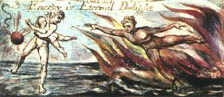
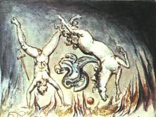

Kutsal kitapların ya da kutsal yasaların hepsi, şu yanılgıların nedenleri olmuşlardır:
Oysa, bunların Karşıtlarıdır Gerçek olan:


Arzuyu kısıtlayanlar, kendi arzuları dizginlenemeyecek denli zayıf olduğu için böyle yapar; ve kısıtlayıcı olan ya da Akıl, arzunun yerini zorla ele geçirir ve gönülsüz olanı yönetir.
Ve kısıtlandığı için giderek edilginleşir, sonunda ve sadece arzunun gölgesi kalıncaya kadar.
Bunun tarihi Yitik Cennet’te anlatılır ki, Yönetici ya da Akıl’a Mesih adı verilir.
Ve ilk Başmelek’e, ya da göklerin sahibinden emirler getirene İblis ya da Şeytan denir, ki onun çocuklarına Günah ve Ölüm adı verilir.
Oysa Eyub’un kitabında, Milton’ın Mesih’ine Şeytan denmektedir.
Zira bu tarih, her iki tarafça da benimsenmiştir.
Gerçekten de, Arzu sanki defedilmiş gibi görünür Akıl’a, lâkin İblis, Mesih’in arzusuna yenik düştüğünü ve Cehennemden çaldıklarıyla bir cennet kurduğunu söyler.
Teselli ediciyi ya da Arzuyu yollaması için Mesih’in Baba’ya yalvarması İncil’de betimlenir, ki Akıl, gelenler üzerinde Fikirler inşa edebilecektir; Kutsal Kitabın Yehova’sı alevler üzerinde oturandan başkası değildir. Bilin ki, İsa’nın ölümünden sonra Yehova olan, odur.
Fakat Milton’da, Baba Yazgıdır, Oğul beş duyunun Oranı ve Kutsal-ruh ise Boşluk!
Not: Melekleri ve Tanrıyı yazarken Milton’ın elinin kolunun bağlanması, İblisleri ve Cehennemi yazarken ise özgür kalmasının nedeni, onun gerçek bir Şair olması ve farkında olmadan İblis’in yanında yer almasıdır.